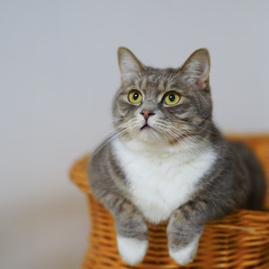
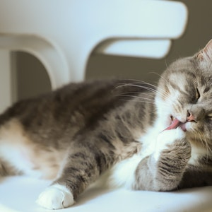
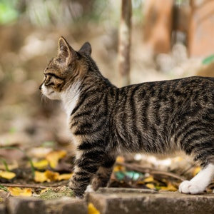

Cats are naturally drawn to small, confined spaces such as baskets. They feel comfortable and comforted there, even when they don't exactly fit.

Paw licking is one way that cats clean themselves. Distributing saliva all over their body helps them with grooming.

Your cat's interest in exploring his environment is driven by his instinct, and that instinct helps your cat to survive and stay safe.
Playing hide and seek with your cat is a wonderful idea since it gives mental stimulation and exercise for both the cat and the cat owner.